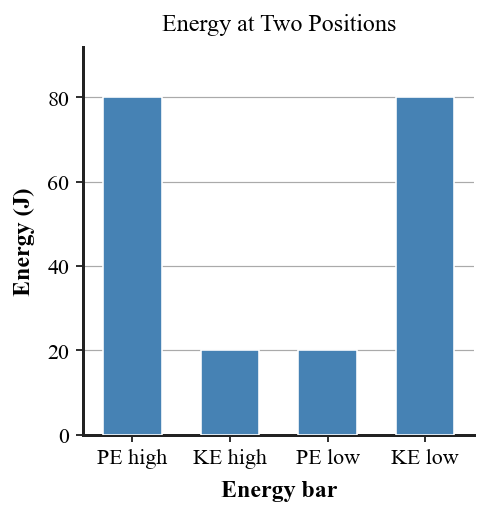

State the law of conservation of energy in words.
What is mechanical energy in the context of kinetic and potential energy?
At the highest point of a roller-coaster hill, which mechanical energy form is usually greatest?
Near the lowest point of a frictionless track, which mechanical energy form is usually greatest?
When brakes warm during stopping, name the energy form receiving much of the car’s former kinetic energy.
A pendulum slows because of air resistance. Does total energy disappear? Answer yes or no.
Complete the idea: net work changes an object’s __________ energy.
Classify sound produced in a collision as a useful mechanical-energy form or an energy transfer to the surroundings.
If friction is negligible, what happens to the sum of KE and PE as a coaster moves along a track?
If friction is important, can mechanical energy decrease while total energy remains conserved?
Use the energy bar graph to identify the position with greater KE.

Use the friction energy graph to identify the energy form that grows as mechanical energy decreases.